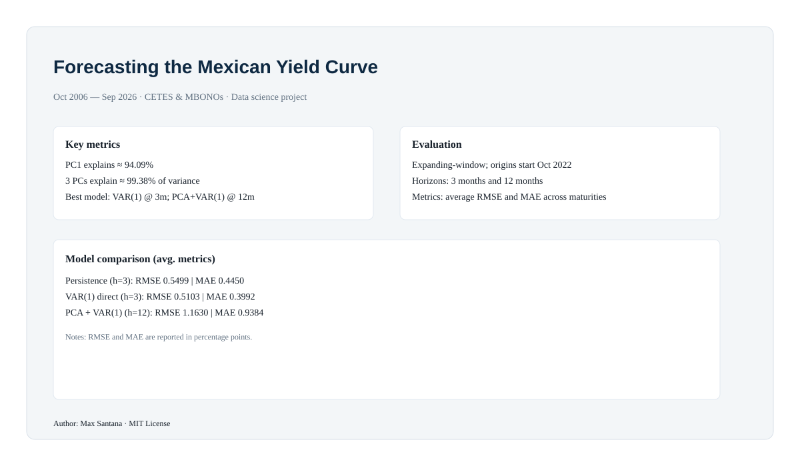

Forecasting the Mexican Yield Curve
A data-science project studying the structure and forecasting performance of Mexico’s nominal yield curve using monthly auction data from October 2006 to September 2026.
Project infographic

Open GitHub repository
Highlights
Three principal components explain about 99.38% of the curve’s variation.
PC1 explains about 94.09% of the variance, consistent with a dominant level factor.
At 3 months, direct VAR(1) shows the strongest performance in the chosen evaluation design.
At 12 months, PCA + VAR(1) is the top-performing strategy among those evaluated.
Artifact links
README
Forecast comparison script
Executive brief script
Project type: Data science • Time series • Forecasting • PCA